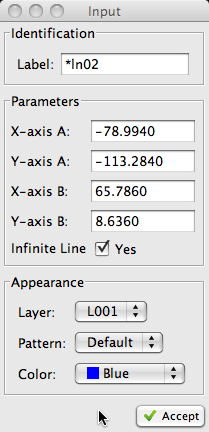

Step 1 of 2:
Select or
Indicate the start
point of the line
or
Indicate the start
point of the line
or
Indicate the start
point of the line|
Step 1 of 2:
Select
or
Indicate the start
point of the line |
 an existing point
an existing point a new point (free hand)
a new point (free hand)|
Step 2 of 2:
Select
or
Indicate the end
point of the line |
an existing point a new point (free hand)| The Input Dialog (pictured right) may be used to modify any of
attributes of the line prior to creating it. These attributes include the layer, color, or line pattern. Lines can be also be created by specifying their end-point coordinates via the dialog. |
 |